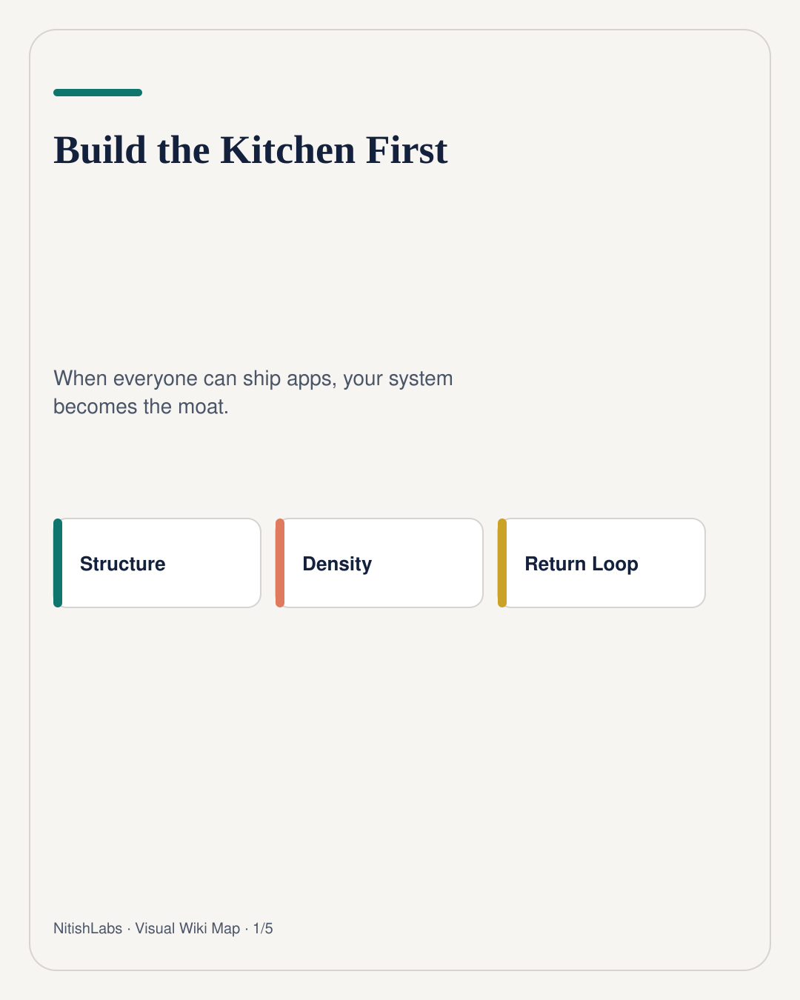
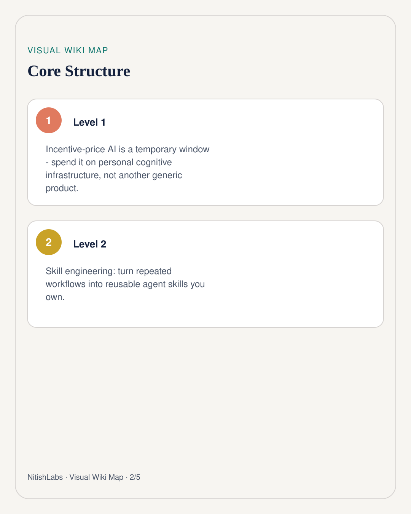
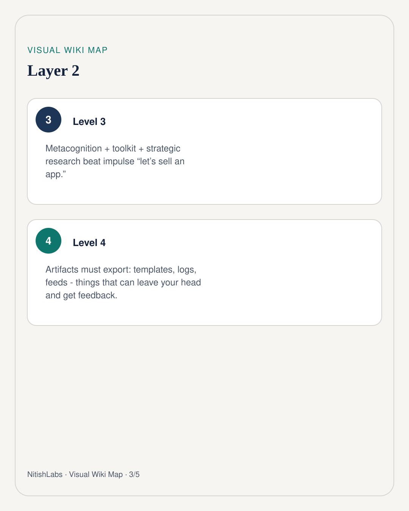
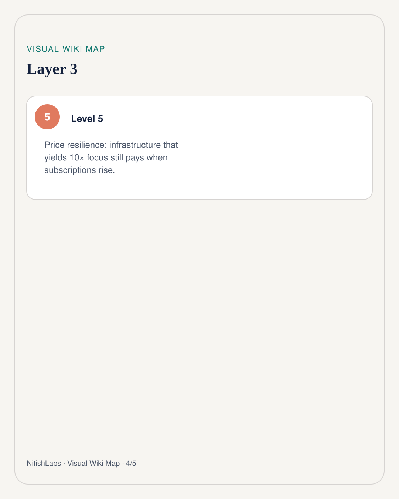
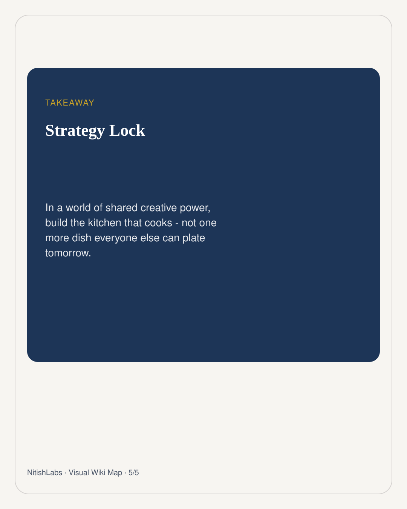

Build the Kitchen First
When everyone can cook with the same models, another dish is not a moat. Your kitchen - the system that produces work - is.
Visual Wiki Map
Compressed schema carousel · swipe





Nitish Chauhan’s mid-2026 read on AI coding tools was not “which editor is cheaper.” It was: we are living inside a temporary incentive window - aggressive pricing, investor-subsidized magic - and most people are spending it the same way. See an agent. Imagine a product. Ship something sellable. Repeat.
That impulse is understandable. It is also generic. If your audience can access the same models six months later, the product itself becomes a commodity. What does not commoditize as fast is the system that commands those agents - your personal cognitive infrastructure.
Three priorities that compound
- Metacognition: use agents to watch how you work - bias, framing, energy drains - not only to finish tickets.
- Personal toolkit: memory systems, skill suites, and automation that protect focus for deep judgment.
- Strategic research: multi-stage investigation that would take a human weeks - used to find uncrowded problems, not trendy ones.
Impulse: agent → app → market hope Leverage: agent → kitchen → artifacts → feedback
Artifacts, or it did not happen
Knowledge-seeking without export is a cozy trap. Convert every pillar into something that can leave your head: a shareable skill pack, a decision log, a research brief. Money and human feedback then become signals - not because greed is the goal, but because public utility needs a receipt.
When subscriptions rise, toy-builders churn. People with infrastructure that yields 10× focus keep paying - gladly.
Build the kitchen first. The dishes will still be there tomorrow. The pricing window might not.